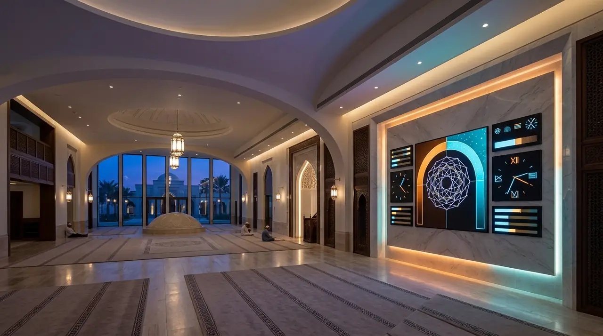
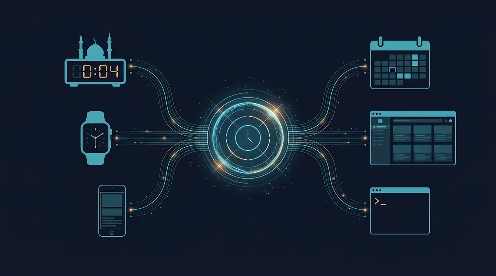
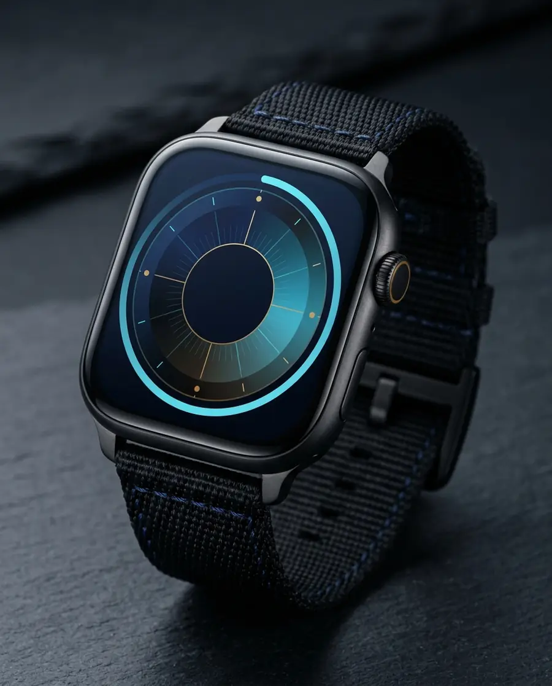
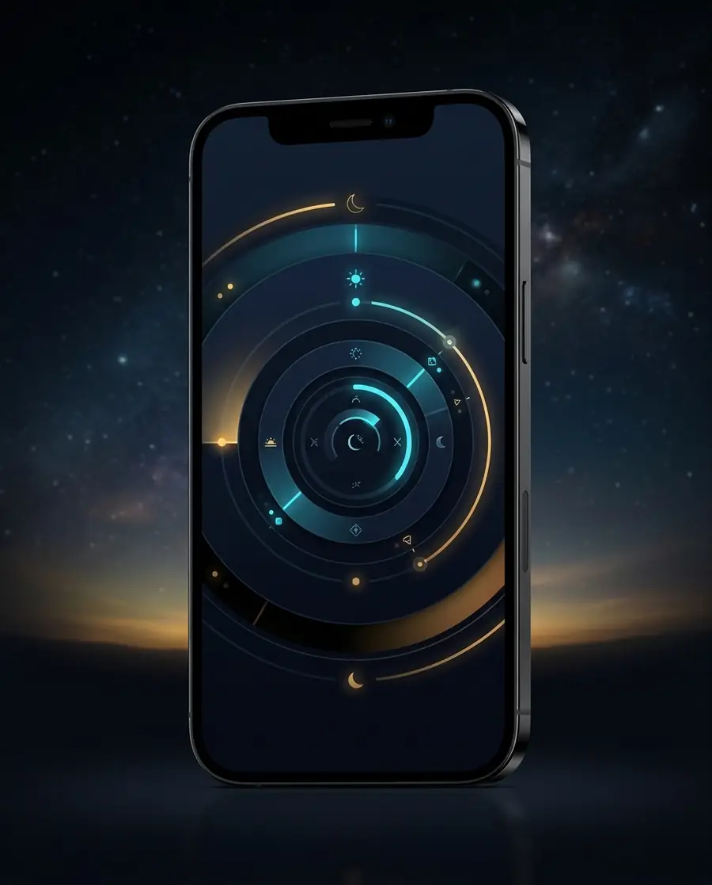
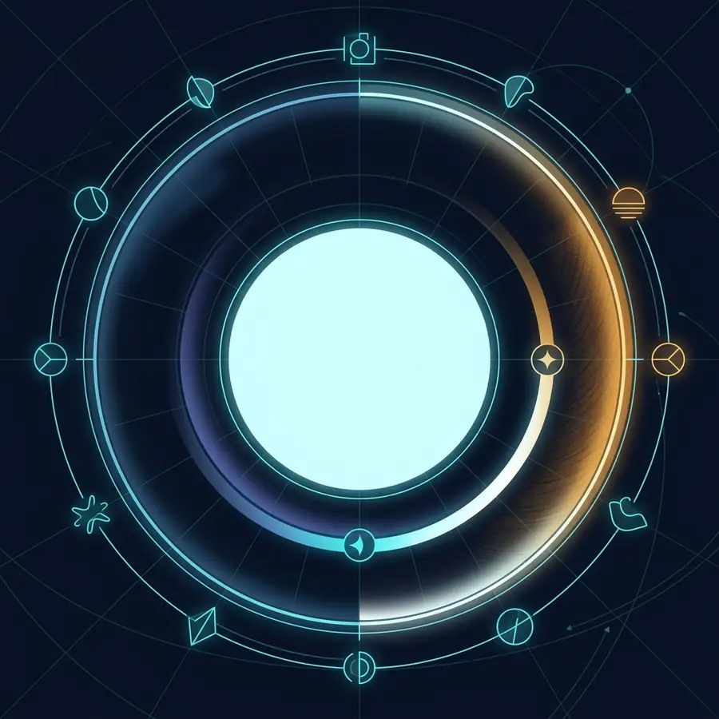
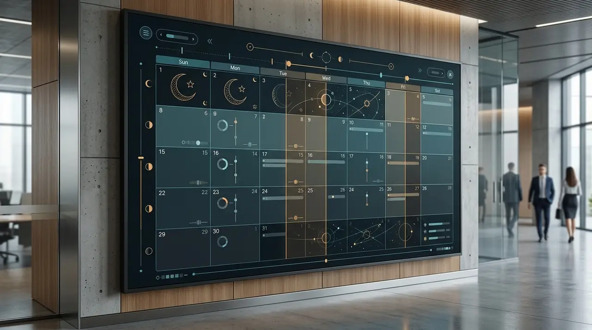
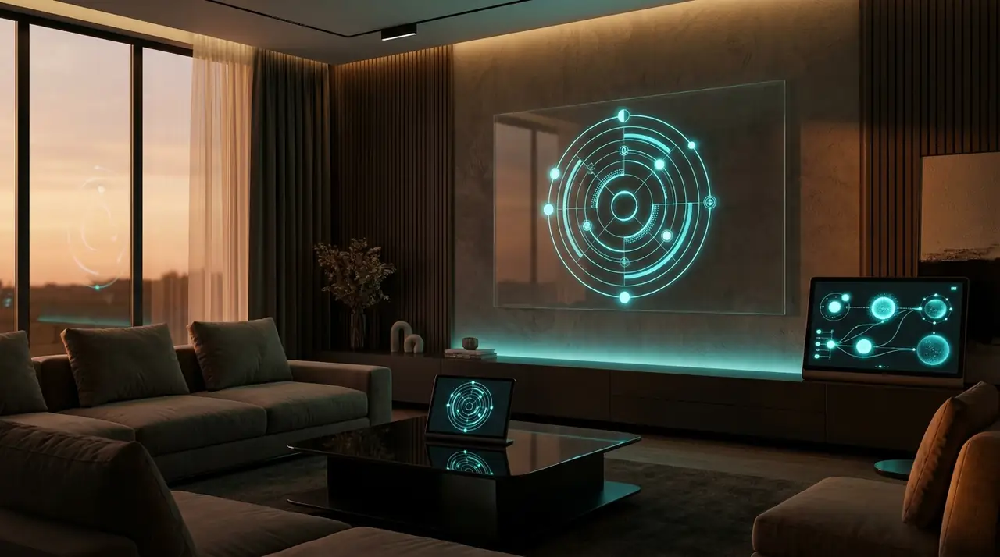
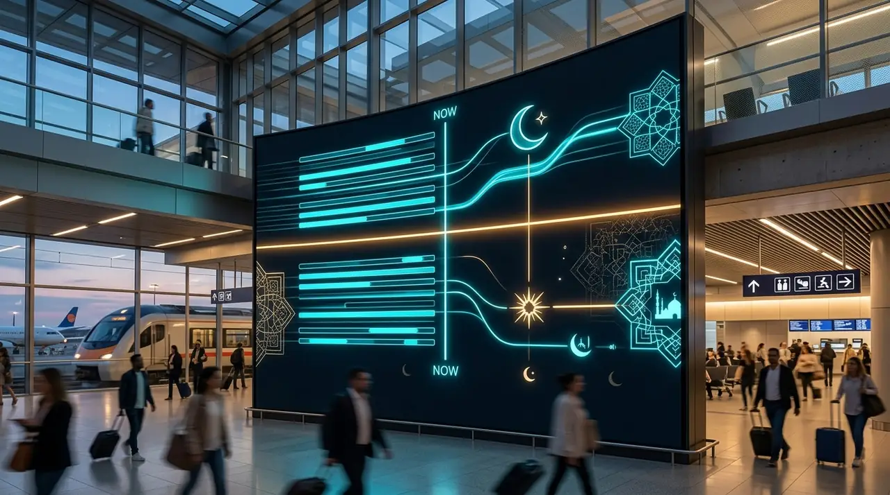
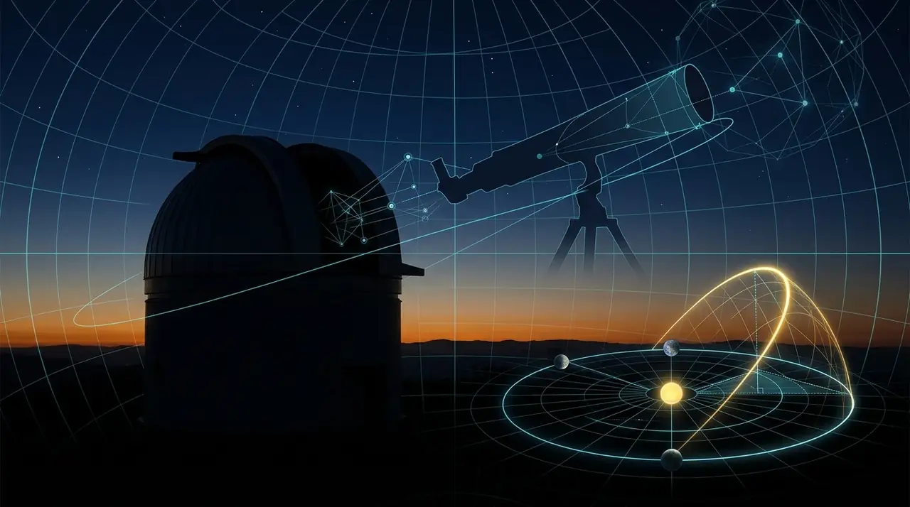

Concept artMosque Waqt Clock
CONCEPTA prayer-hall wall display: the Waqt reading, the next event with a countdown and the Maghrib boundary.
- Data: /v1/waqt (real)
- Status: no deployed device
Applications
Waqt is infrastructure first. Here is what exists, what is a design concept, and what is still an idea — we never present a mockup as a deployed product.
Exists and runs: you can use it or open it now — the API, the reference viewer, the CLI and the live visualisations on this site.
A designed application. The preview on this page is real software fed by real (or labelled demo) data; no product or device is deployed.
An idea the API enables. Not designed in detail and not built.
New: the Waqt Experience Lab — five interactive demonstrations, from dragging through a Waqt day to building your own application.
Real data
Four presentations of one API response.
Architecture

Concept artCatalogue

Concept artA prayer-hall wall display: the Waqt reading, the next event with a countdown and the Maghrib boundary.

Concept artA watch face built from the same event timeline as the circular clock — no separate calculations.

Concept artA phone-first day ring, next event and Hijri date, with location from the device.

Concept art Concept art
Concept artTwo temporal models side by side using the real event times and the real day length.

Concept artA wall calendar for schools, offices or mosques: Islamic week, fiscal and academic years from configurable rules.
A console for exploring responses, events and timelines while integrating. Today: interactive API docs and the live demo.
See the Waqt day change as you move — the boundary is Maghrib at your location.
Horizon
Ideas the API makes possible. None is built.

Concept art
Concept art
Concept art